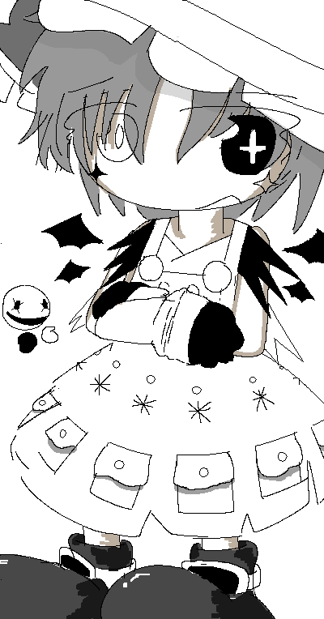
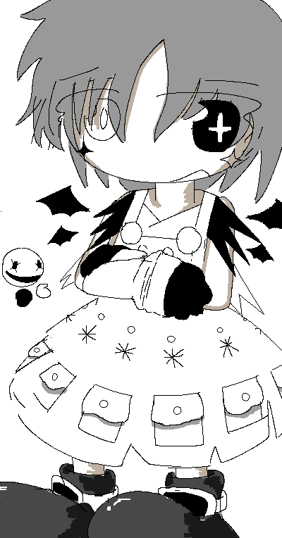

|

|


Blanche
Introduced 14 March 2026
Blanche's Associated Music:
Play Music"Blanche's Theme: Oh, How Wondrous! ☆ Amalgamation of All Colors"
View Gallery Page
General Information:
Blanche is a recurring character in Colormill.
Personality:
During idle times, Blanche will exhibit a playful personality, and lightly tease those who are close to her, although she is generally well-intentioned while doing so. When surrounded by strangers or confronted about something, she will not express strong emotions of any kind.
Although Blanche will usually get by playfully, she becomes more stern when handling formal matters at her occupation. She will sometimes come off as sanctimonious when leaning towards a serious temperament, but does so out of thoughtfulness for others, as well as her environment.
Spawn Quirk:
Blanche has the ability to spawn floating spherical puppets. This is due to her appreciation for things of an old-fashioned and quirky nature. Although her puppets are not truly sentient, she likes to apply personalities to them in an imaginative sense.
Occupation:
Blanche is one of the main overseers of Cerise and serves as a key manager of the setting's Color Harmony. She is primarily in charge of maintaining the balance between Cerise and the Dungeon Cavities that remain underground, among other areas that exist.
Relationships:
Blanche will occasionally keep in touch with Amalie.
Blanche has acknowledged Astrid from a distance. She is slightly turned off by her odd-natured quirks, but tries to look past them.
[Colormill Home]
Project Launched 11 February 2026